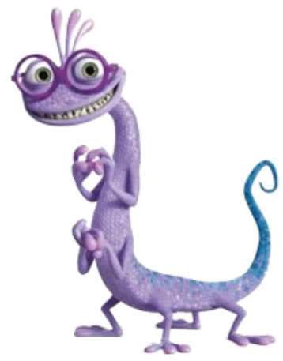

Horários
| Segunda-Feira | Terça-Feira | Quarta-Feira | Quinta-Feira | Sexta-Feira |
|---|---|---|---|---|
| Psicologia do Medo Infantil 7:00-7:50 |
Expressividade Vocal Avançada 7:00-7:50 |
Engenharia de Sustos e Rendimento Energético 7:00-7:50 |
Tecnologia de Portais Interdimensionais 7:00-7:50 |
Expressividade Vocal Avançada 7:00-7:50 |
| Engenharia de Sustos e Rendimento Energético 7:50-8:40 |
Psicologia do Medo Infantil 7:50-8:40 |
Expressividade Vocal Avançada 7:50-8:40 |
Engenharia de Sustos e Rendimento Energético 7:50-8:40 |
Tecnologia de Portais Interdimensionais 7:50-8:40 |
| - | - | - | - | - |
| Tecnologia de Portais Interdimensionais 8:40-9:30 |
Engenharia de Sustos e Rendimento Energético 8:40-9:30 |
Psicologia do Medo Infantil 8:40-9:30 |
Expressividade Vocal Avançada 8:40-9:30 |
Engenharia de Sustos e Rendimento Energético 8:40-9:30 |
| Engenharia de Sustos e Rendimento Energético 10:00-10:50 |
Tecnologia de Portais Interdimensionais 10:00-10:50 |
Engenharia de Sustos e Rendimento Energético 10:00-10:50 |
Psicologia do Medo Infantil 10:00-10:50 |
Expressividade Vocal Avançada 10:00-10:50 |
